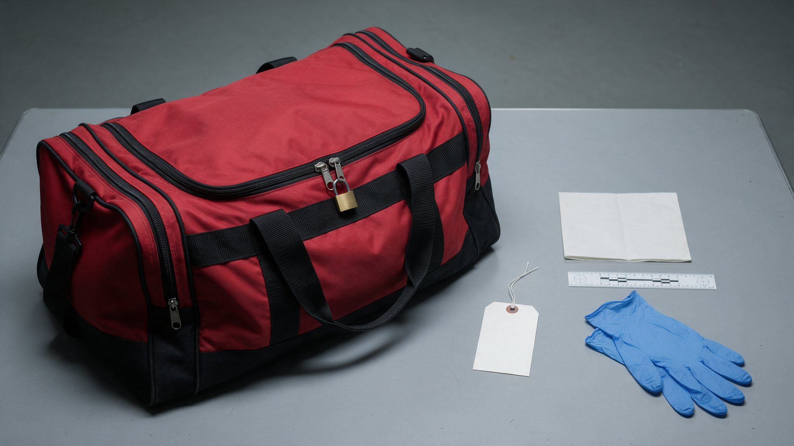

1 — ListenHear the debate
Each episode argues a case from two directions: the evidence, and the gut read.
2 — LookOpen the file
See what they were arguing over: the scene, the objects, the paperwork, the dates.
3 — DecideMake your own call
Nobody wins on the show. Weigh both readings and reach your own verdict.
Latest case file
Episode 12 · Updated each Sunday
Open CaseLondon · 2010
Spy in a Bag: The Death of Gareth Williams
An MI6 codebreaker found in a padlocked bag in his own bath. Four hundred attempts to lock that bag from the inside, and nobody managed it. Two official verdicts that still disagree.
Open the case file →